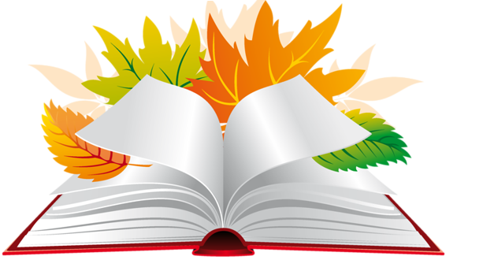

Комунальний заклад «Маріупольська спеціалізована школа І-ІІІ ступенів №8 імені Героя України Бойка В.С. Маріупольської міської ради Донецької області»
Методична проблема, над якою працюю: Формування інформаційно-комунікаційних компетентностей учнів на уроках інформатики як засіб підвищення якості навчальних досягнень учнів.
Освіта - вища
Педагогічний стаж - 4 роки
Кваліфікаційна категорія – спеціаліст

| Для учнів 2-4 класах | Застосовую логічні завдання, завдання на знаходження відповідностей, завдання на уважність та розвиток мислення, елементи гри, широко використовую казкові персонажі та герої мультфільмів. | Застосовую комп’ютерні програми: GCompris, графічний редактор TuxPaint, клавіатурний тренажер RapidTyping, середовище виконання алгоритмів Scratch, розробляю власні презентації із завданнями |
| Для учнів 5-7 класів | Успішно реалізую методи інтерактивного навчання | Підводячи підсумки уроку використовую методи незакінчені речення, кошик, мікрофон. |
| Для учнів 8-11 класів | Використовую різнорівневе навчання | Практичні роботи, домашні завдання, написання опорного конспекту |